| charset |
Märgistikomplekt |
Määrab dokumendi teksti kodeeringu.
|
 |
| inline element |
Ridaelement |
HTML-i element, mis paigutatakse lehele samale reale, kus eelnev või järgnev sisu ei tekita uut
reavahet.
|
 |
| block element |
Plokk-element |
HTML-i element, mis moodustab terviku ja paigutatakse uuele reale, eraldudes eelnevast ja järgnevast
sisust.
|
 |
| padding |
Täidis |
CSS omadus, mis määrab elemendi sisu ja selle ümbritseva piirjoone (border) vahele jääva tühiku.
|
 |
| margin |
Äär |
CSS omadus, mis määrab elemendi ümber oleva tühiku, eraldades elemendi teistest elementidest.
|
 |
| shorthand |
Lühendvorm |
CSS-i lühendvorm, kus saab kasutada ühte omadust mitme väärtuse määramiseks.
|
 |
| wireframe |
Joonis |
Visuaalne kujutis, mis esitab veebilehe või rakenduse struktuuri ja paigutust, ilma detailse graafika ja sisuta.
|
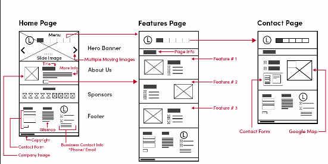 |
| Media query |
Meedia päring |
CSS tehnika, mis võimaldab kohandada stiile sõltuvalt seadme ekraanilaiusest, resolutsioonist või muudest omadustest.
|
 |
| hover |
Hiirekursori kohal |
CSS pseudo-klass, mis rakendub elemendile siis, kui hiirekursor on selle kohal.
|
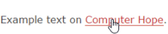 |
| border-box |
Piirikast |
CSS karbimudel, kus elemendi laius ja kõrgus hõlmavad piirjooni ja täitmist, mitte ainult sisu.
|
 |
| padding-box |
Täidise kast |
CSS karbimudel, kus elementi laius ja kõrgus hõlmavad ainult piirjooni ja täitmist, mitte sisu.
|
 |
| scroll |
Kerimine |
Kui leht või element on pikem või laiem kui brauseriaken, siis kerimine võimaldab liikuda vaateväljas, et näha ülejäänud sisu.
|
 |
| content stacking |
Sisu kuhjamine |
Disaini kontseptsioon, kus erinevad elemendid või kihid paigutatakse üksteise peale.
|
 |
| hypertext |
Hüpertekst |
Tekst, mis sisaldab hüperlinke, mis võimaldavad hüpata ühest dokumendist teise.
|
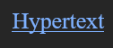 |
| hyperweb |
Hüperveeb |
Mõiste, mis viitab internetile kui hüpertekstipõhisele võrgule.
|
 |
| viewport |
Vaateaken |
Veebilehe või rakenduse nähtav ala brauseriaknas.
|
 |
| semantic markup |
Tähenduslik märgistus |
HTML-i märgistuse kasutamine vastavalt sellele, millist tähendust tekst kannab, mitte ainult selle visuaalse esituse jaoks.
|
 |
| checkbox |
Märkeruut |
HTML-i vormielement, mis võimaldab kasutajal valida mitu valikut.
|
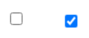 |
| radio buttons |
Raadionupud |
HTML-i vormielemendid, mis võimaldavad kasutajal valida ühe valiku mitme hulgast.
|
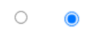 |
| dropdown select |
Rippmenüü valik |
HTML-i vormielement, mis võimaldab kasutajal valida ühe valiku rippmenüüst.
|
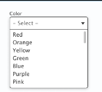 |
| input |
Sisend |
HTML-i element, mis võimaldab kasutajal sisestada teksti või teha valikuid.
|
 |
| disabled |
Keelatud |
Olek, mis näitab, et element (nt nupp või sisend) on mittekasutatav või mitteaktiivne.
|
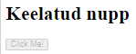 |
| tooltip |
Kursori vihje |
Väike teksti- või pildikast, mis ilmub kasutajaliideses, kui kursor liigub elemendi kohal.
|
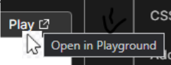 |
| toggle switch |
Lülituslüliti |
Interaktiivne nupp või lüliti, mis lubab kasutajal sisse või välja lülitada mõne funktsiooni või oleku.
|
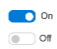 |
| autocomplete |
Automaatne täitmine |
Vormiväli, mis pakub kasutajale automaatsete soovitustega täitmist, kui ta hakkab midagi sisestama.
|
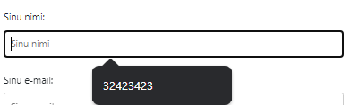 |
| slider |
Liugur |
Interaktiivne nupp või liugur, mida saab libistada, et muuta väärtust või seadet.
|
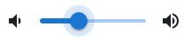 |
| root element |
Juurelement |
HTML-i dokumendi ülemine element, mis hõlmab kogu dokumendi sisu.
|
 |
| grid layout |
Ruudustikpaigutus |
CSS paigutussüsteem, mis võimaldab sisu paigutada ruudustiku või tabeli sarnase struktuuri abil.
|
 |
| UI library |
Kasutajaliidese raamatukogu |
Kollektsioon taaskasutatavatest kasutajaliidese komponentidest ja stiilidest, mis aitavad kiirendada veebirakenduste arendamist.
|
 |
| sidebar |
Külgriba |
Külgriba on kasutajaliidese osa, mis on paigutatud lehe küljele ja võib sisaldada navigeerimise või täiendava sisu linke.
|
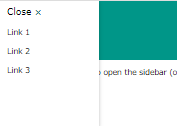 |